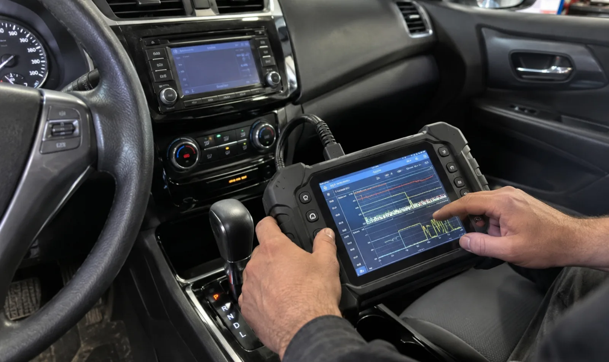

Delayed or hard shifts
The vehicle may hesitate before moving, engage with a bump, or shift more harshly than normal.
Transmission and driveline concerns
Contact Jaden when a car or truck slips, hesitates, shifts hard, delays engagement, leaks fluid, or shows a transmission-related warning. Diagnosis comes before deciding what repair is appropriate.
416-577-8237jadensauthoanddetailing@gmail.com
Common symptoms
The vehicle may hesitate before moving, engage with a bump, or shift more harshly than normal.
Engine speed may rise without a matching increase in vehicle speed during acceleration or a shift.
Fluid under the vehicle, a warning light, unusual noise, or a burning smell can provide useful clues.
Assessment
Mobile or shop
Jaden may be able to begin assessment at your location. If the work needs a lift, extended testing, shop equipment, or safer conditions, he will ask you to bring the vehicle to the Port Credit shop.
Request an appointment
Send the year, make and model, location, warning-light information, whether the vehicle is drivable, and whether the concern happens cold, warm, while accelerating, or when selecting drive or reverse.
Request a quote
Jaden confirms the next step, service location, and appointment directly.